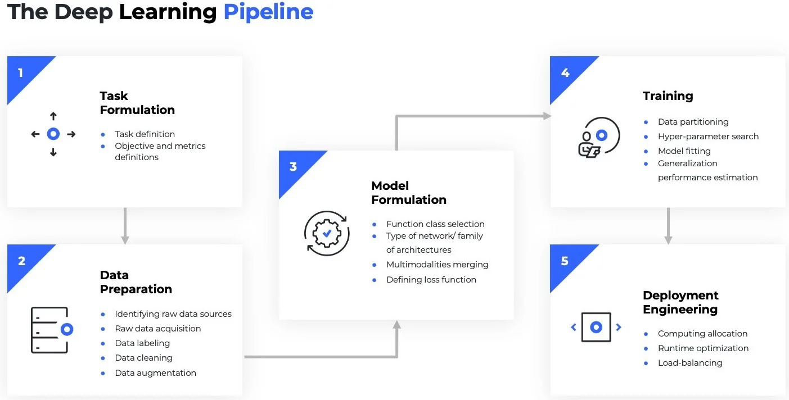
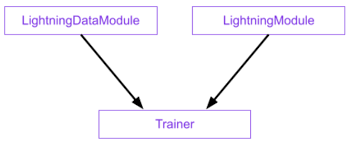
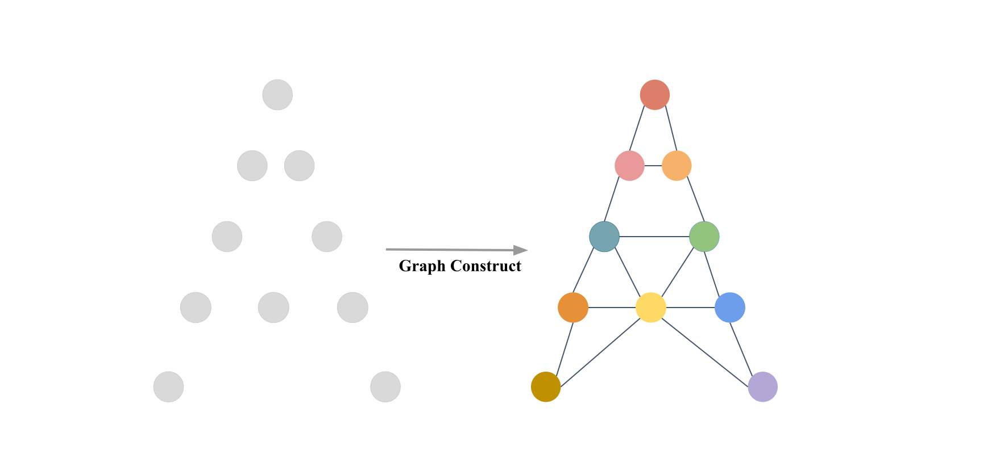
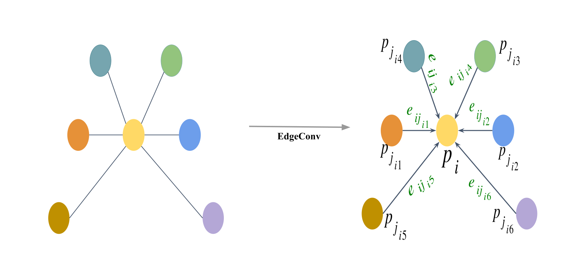

import pytorch_lightning as pl
from torch.utils.data import DataLoader
from .efi_dataset import EfiDataset
class EfiDataModule(pl.LightningDataModule):
"""
A PyTorch Lightning DataModule for the EFI point cloud dataset.
Handles data preparation, setup, and creation of DataLoaders.
"""
def __init__(self, cfg, args):
super().__init__()
self.cfg = cfg # Full dataset config (e.g., root, csv_path)
self.args = args # Command line arguments (e.g., batch_size, num_point)
self.num_workers = 4 # Fixed worker count for robustness
def prepare_data(self):
"""
Logic for dataset preparation.
If 'process_data' is true, this triggers the pre-processing step.
"""
if self.args.process_data:
print("--- Running Data Pre-processing (train) ---")
EfiDataset(
root=self.cfg['root'],
csv_path=self.cfg['csv'],
label_col=self.cfg['label_col'],
task_type=self.cfg['task'],
split='train',
num_points=self.args.num_point,
classes_list=self.cfg['classes'],
process_data=True, # Triggers cache generation
use_normals=self.cfg['use_normal'],
use_fps=self.cfg.get('use_fps', True)
)Training Deep Learning Models
Introduction
Deep Learning (DL) models, specifically those designed for 3D point clouds, are powerful tools for automation. This tutorial outlines how to use the PyTorch Lightning (PL) framework to train a specific and highly effective model—the Dynamic Graph CNN (DGCNN)—on your plot data.
Our goal is to automate complex analysis, such as:
Classification: Automatically determining the forest type (e.g., conif vs. decid vs. mixed) for a plot.
Regression: Estimating biomass or predicting tree attributes like total height or basal area.
Source code is available on Github
DL Pipeline

The core components of PL:
LightningDataModule (LDM)wraps the data phase. It takes in a customPyTorch DatasetandDataLoaderwhich enables Trainer to handle data during training. If needed, LDM exposes the setup and prepare_data hooks in case you need additional customization.LightningModuleitself is a customtorch.nn.Modulethat is extended with dozens of additional hooks like on_fit_start and on_fit_end. These hooks allow us better control of Trainer’s flows and enables custom behaviors by overriding these hooks.Trainerconfigures the training scope and manages the training loop withLightningModuleandLightningDataModule. The simplest Trainer configuration is accomplished by setting flags like devices, accelerator, and strategy and by passing in our choice of loggers, profilers, callbacks, and plugins.

The Data Foundation: The EFI Point Cloud Dataset
The first critical step in any DL project is data ingestion. In our project, this is handled by two dedicated Python classes: EfiDataset and EfiDataModule
The EfiDataset
This class is the translator. It knows how to read your raw point cloud files (e.g., .npy format saved for each plot) and your labels file (e.g., labels.csv for species estimation and biomass_labels.csv for biomass estimation in our workshop).
Key functions:
Input: It takes your plot files and the label column you are interested in (e.g.,
dom_sp_typefor classification ortotal_agb_zfor biomass regression).Preprocessing: It samples a fixed number of points (
num_point, default 8192) from each plot and, optionally, calculates normals (which describe the local orientation of the points, improving model performance).Caching: When run with
--process_data, it intelligently processes and saves the prepared data as a cache file. This avoids resampling the raw data every time you train, drastically speeding up development.
The EfiDataModule
In the PL framework, the EfiDataModule wraps the EfiDataset to handle the data workflow. It automatically creates the necessary DataLoader objects for the training, validation, and test sets.
This class ensures the data is correctly loaded and split (e.g., using the split column in labels.csv), and batches are efficiently provided to the GPU workers.
Data Augmentation
The Model: Dynamic Graph CNN (DGCNN)
How DGCNN Works
While our framework supports multiple models (like PointNet), we will focus on DGCNN (--model dgcnn) because of its superior ability to capture complex local geometry in point clouds—perfect for identifying fine details in forest structure.
Unlike standard 2D image models, DGCNN does not treat points in isolation. Instead, for every point in the cloud:
Find Neighbors: It looks at the \(k\) closest neighboring points.
Build a Local Graph: It constructs a miniature graph defining the relationship between the central point and its neighbors.
Dynamic Update: After each layer of processing, it re-evaluates the “neighborhood” in the feature space (hence Dynamic). This allows the model to progressively learn more complex, abstract relationships in the data, ultimately leading to highly accurate classification or attribute prediction for the entire plot.


Implementation
Define the DGCNN Model
This section covers the implementation of the get_model function and the DGCNN class itself, including its structure of feature extraction layers and final classification/regression heads.
Code
import torch
import torch.nn as nn
import torch.nn.functional as F
from models.heads import ClassificationHead, RegressionHead
def knn(x, k):
inner = -2*torch.matmul(x.transpose(2, 1), x)
xx = torch.sum(x**2, dim=1, keepdim=True)
pairwise_distance = -xx - inner - xx.transpose(2, 1)
idx = pairwise_distance.topk(k=k, dim=-1)[1] # (batch_size, num_points, k)
return idx
def get_graph_feature(x, k=20, idx=None):
batch_size = x.size(0)
num_points = x.size(2)
x = x.view(batch_size, -1, num_points)
if idx is None:
idx = knn(x, k=k) # (batch_size, num_points, k)
device = torch.device('cuda')
idx_base = torch.arange(0, batch_size, device=device).view(-1, 1, 1)*num_points
idx = idx + idx_base
idx = idx.view(-1)
_, num_dims, _ = x.size()
x = x.transpose(2, 1).contiguous() # (batch_size, num_points, num_dims) -> (batch_size*num_points, num_dims) # batch_size * num_points * k + range(0, batch_size*num_points)
feature = x.view(batch_size*num_points, -1)[idx, :]
feature = feature.view(batch_size, num_points, k, num_dims)
x = x.view(batch_size, num_points, 1, num_dims).repeat(1, 1, k, 1)
feature = torch.cat((feature-x, x), dim=3).permute(0, 3, 1, 2).contiguous()
return feature
class get_model(nn.Module):
def __init__(self, cfg):
super(get_model, self).__init__()
self.k = cfg.get('k', 20)
emb_dims = cfg.get('emb_dims', 1024)
num_classes = cfg['num_classes']
self.bn1 = nn.BatchNorm2d(64)
self.bn2 = nn.BatchNorm2d(64)
self.bn3 = nn.BatchNorm2d(128)
self.bn4 = nn.BatchNorm2d(256)
self.bn5 = nn.BatchNorm1d(emb_dims)
self.conv1 = nn.Sequential(nn.Conv2d(6, 64, kernel_size=1, bias=False),
self.bn1,
nn.LeakyReLU(negative_slope=0.2))
self.conv2 = nn.Sequential(nn.Conv2d(64*2, 64, kernel_size=1, bias=False),
self.bn2,
nn.LeakyReLU(negative_slope=0.2))
self.conv3 = nn.Sequential(nn.Conv2d(64*2, 128, kernel_size=1, bias=False),
self.bn3,
nn.LeakyReLU(negative_slope=0.2))
self.conv4 = nn.Sequential(nn.Conv2d(128*2, 256, kernel_size=1, bias=False),
self.bn4,
nn.LeakyReLU(negative_slope=0.2))
self.conv5 = nn.Sequential(nn.Conv1d(512, emb_dims, kernel_size=1, bias=False),
self.bn5,
nn.LeakyReLU(negative_slope=0.2))
head_input_dim = emb_dims * 2 # 2048
if num_classes == 1:
self.mlp = RegressionHead(head_input_dim, num_classes)
else:
self.mlp = ClassificationHead(
head_input_dim,
num_classes,
drop1=cfg.get('drop1', 0.5),
drop2=cfg.get('drop2', 0.6)
)
def forward(self, x):
batch_size = x.size(0)
x = get_graph_feature(x, k=self.k)
x = self.conv1(x)
x1 = x.max(dim=-1, keepdim=False)[0]
x = get_graph_feature(x1, k=self.k)
x = self.conv2(x)
x2 = x.max(dim=-1, keepdim=False)[0]
x = get_graph_feature(x2, k=self.k)
x = self.conv3(x)
x3 = x.max(dim=-1, keepdim=False)[0]
x = get_graph_feature(x3, k=self.k)
x = self.conv4(x)
x4 = x.max(dim=-1, keepdim=False)[0]
x = torch.cat((x1, x2, x3, x4), dim=1)
x = self.conv5(x)
x1 = F.adaptive_max_pool1d(x, 1).view(batch_size, -1)
x2 = F.adaptive_avg_pool1d(x, 1).view(batch_size, -1)
x = torch.cat((x1, x2), 1)
x = self.mlp(x) # [B, num_outputs]
trans_feat = None # DGCNN does not produce a transform matrix
return x, trans_featLoss functions
The loss function, or cost function, quantifies the difference between the model’s prediction and the true target value. It is the primary signal that guides the Deep Learning model during training. The goal of the optimizer (Adam) is to adjust the model’s weights to continuously minimize this loss value.
Our module uses task-specific loss components:
def get_loss_function(task):
"""
Returns the core loss function (either nn.Module or functional).
"""
if task == 'classification':
# Using CrossEntropyLoss is simplest if input is raw logits.
return F.nll_loss # nn.CrossEntropyLoss()
elif task == 'regression':
return F.smooth_l1_loss
else:
raise ValueError(f"Unknown task type: {task}")- For Classification Tasks:
F.nll_loss(Negative Log Likelihood Loss).
This function is typically used when the model outputs log-probabilities (often obtained by applying a log-softmax activation to the raw logits). It penalizes the model when it assigns a low probability to the correct class:
\[ L_{\text{NLL}}(y, \hat{y}) = - \hat{y}_c \]
where \(y\) is the true class index, \(\hat{y}\) is the vector of log-probabilities output by the model (e.g., via F.log_softmax), and \(\hat{y}_c\) is the log-probability corresponding to the true class \(c\).
- For Regression Tasks:
F.smooth_l1_loss (Smooth L1 Loss or Huber Loss).
This function is a robust alternative to Mean Squared Error (L2) and Mean Absolute Error (L1). It behaves like L2 loss for small errors (which gives a smoother gradient for optimization) and like L1 loss for large errors (which makes it less sensitive to outliers).
The PyTorch Lightning Wrapper: EfiModelModule
This class is the single source of truth for your experiment:
- Initialization: It loads the
DGCNNmodel and sets up the loss function.
class EfiModelModule(pl.LightningModule):
def __init__(self, cfg, args):
super().__init__()
# Store hyperparameters for W&B/checkpointing
self.save_hyperparameters(cfg, args)
self.cfg = cfg
self.args = args
self.task = cfg['task']
# 1. Load Model Backbone
# NOTE: This import assumes a specific package structure (e.g., models.model_name)
model_module = importlib.import_module(f"models.{cfg['model_name']}")
self.model = model_module.get_model(cfg)
# 2. Setup Metric Calculators (one for validation, one for testing)
self.val_metrics = MetricsCalculator(self.task, cfg['num_classes'])
self.test_metrics = MetricsCalculator(self.task, cfg['num_classes'])- Core Step Logic:
forward(self, points): Simple pass-through to theDGCNNbackbone, returning both prediction and feature transformation._shared_step(self, batch): The main processing pipeline.
def forward(self, points):
"""Standard model forward pass."""
return self.model(points)
def _shared_step(self, batch):
"""Shared logic for training, validation, and test step."""
points, target, _ = batch # _ is plot_id, doesn't need in the these stpes
# Transpose [B, N, C] -> [B, C, N] and enforce float32
points = points.transpose(2, 1).float()
# 1. Forward Pass
pred, trans_feat = self(points)
# 2. Calculate Loss
loss = calculate_total_loss(
pred,
target,
trans_feat,
task=self.task
)
return loss, pred, targettraining_step,validation_step,test_step: Defines how to calculate the loss for a single batch of data. This loss includes the primary objective (Classification or Regression loss) plus any regularization (like the matrix difference loss inDGCNN).
training_step:
# --- Training ---
def training_step(self, batch, batch_idx):
loss, _, _ = self._shared_step(batch)
# Log basic training loss and learning rate for W&B
self.log('train/loss', loss, on_step=False, on_epoch=True, prog_bar=True)
self.log('train/lr', self.optimizers().param_groups[0]['lr'], on_step=True, on_epoch=False)
return lossvalidation_step:
Code
# --- Validation ---
def validation_step(self, batch, batch_idx):
loss, pred, target = self._shared_step(batch)
# 1. Log validation loss (PL automatically averages this over the epoch)
self.log('val/loss', loss, on_step=False, on_epoch=True, prog_bar=True)
# 2. Update the full MetricsCalculator for end-of-epoch aggregation
self.val_metrics.update(pred, target, 0.0)
return loss
def on_validation_epoch_end(self):
"""
Calculates and logs all final validation metrics using W&B.
"""
# Compute metrics from the aggregated predictions/targets
all_pred = np.concatenate(self.val_metrics.predictions, axis=0)
all_target = np.concatenate(self.val_metrics.targets, axis=0)
val_logs = {}
if self.task == 'classification':
pred_labels = np.argmax(all_pred, axis=1)
instance_acc = np.mean(pred_labels == all_target)
# Per-Class Accuracy
cm = confusion_matrix(all_target, pred_labels)
# Handle division by zero warning if a class has no samples in the batch
with np.errstate(divide='ignore', invalid='ignore'):
class_acc_array = cm.diagonal() / cm.sum(axis=1)
class_acc = np.mean(class_acc_array[~np.isnan(class_acc_array)])
# Log all classification metrics to W&B
val_logs['val/instance_acc'] = instance_acc
val_logs['val/class_acc'] = class_acc
elif self.task == 'regression':
pred_values = all_pred.flatten()
target_values = all_target.flatten()
# Compute R2 and RMSE
r2 = r2_score(target_values, pred_values)
rmse = np.sqrt(mean_squared_error(target_values, pred_values))
# Log all regression metrics to W&B
val_logs['val/r2_score'] = r2
val_logs['val/rmse'] = rmse
# PL logging handles synchronization across GPUs
self.log_dict(val_logs, on_step=False, on_epoch=True, prog_bar=False)
# Reset metric calculator for the next epoch
self.val_metrics.reset()test_step:
Code
# --- Test Step ---
def test_step(self, batch, batch_idx):
"""
Dedicated step for final, unbiased evaluation on the test set.
Runs when trainer.test() is called.
"""
loss, pred, target = self._shared_step(batch)
# 1. Log test loss
self.log('test/loss', loss, on_step=False, on_epoch=True)
# 2. Update the full MetricsCalculator for end-of-epoch aggregation
self.test_metrics.update(pred, target, 0.0)
return loss
def on_test_epoch_end(self):
"""
Calculates and logs all final test metrics, mirroring the validation logic.
"""
# Compute metrics from the aggregated predictions/targets
all_pred = np.concatenate(self.test_metrics.predictions, axis=0)
all_target = np.concatenate(self.test_metrics.targets, axis=0)
test_logs = {}
if self.task == 'classification':
pred_labels = np.argmax(all_pred, axis=1)
instance_acc = np.mean(pred_labels == all_target)
# Per-Class Accuracy
cm = confusion_matrix(all_target, pred_labels)
with np.errstate(divide='ignore', invalid='ignore'):
class_acc_array = cm.diagonal() / cm.sum(axis=1)
class_acc = np.mean(class_acc_array[~np.isnan(class_acc_array)])
# Log all classification metrics
test_logs['test/instance_acc'] = instance_acc
test_logs['test/class_acc'] = class_acc
elif self.task == 'regression':
pred_values = all_pred.flatten()
target_values = all_target.flatten()
# Compute R2 and RMSE
r2 = r2_score(target_values, pred_values)
rmse = np.sqrt(mean_squared_error(target_values, pred_values))
# Log all regression metrics
test_logs['test/r2_score'] = r2
test_logs['test/rmse'] = rmse
# PL logging handles synchronization across GPUs
self.log_dict(test_logs, on_step=False, on_epoch=True, prog_bar=False)
# Reset metric calculator for the next run
self.test_metrics.reset()prediction_step is used for generating raw output/predictions on unseen data, it does not calculating loss and metrices:
Code
# --- Prediction / Inference ---
def predict_step(self, batch, batch_idx, dataloader_idx=0):
"""
Used for generating raw output/predictions on unseen data.
Does not calculate loss or metrics.
Runs when trainer.predict() is called.
"""
# Note: We assume the batch structure is the same, but the target is ignored or zeroed out
points, _ = batch
# Transpose [B, N, C] -> [B, C, N] and enforce float32
points = points.transpose(2, 1).float()
# 1. Forward Pass
# Assuming self(points) returns (pred, trans_feat), we only return the prediction (pred)
pred, _ = self(points)
# Return only the raw prediction tensor for the user
return pred- Optimizer and Scheduler:
configure_optimizers: the setup of theAdamoptimizer (with specific learning rate and weight decay from args) and theStepLRscheduler, emphasizing the necessity of returning them in the nested dictionary format required byPyTorch Lightning.
Code
# --- Optimizer Configuration ---
def configure_optimizers(self):
"""Defines the optimizer and scheduler as required by PL."""
optimizer = torch.optim.Adam(
self.parameters(),
lr=self.args.learning_rate,
betas=(0.9, 0.999),
eps=1e-08,
weight_decay=self.args.decay_rate
)
scheduler = torch.optim.lr_scheduler.StepLR(optimizer, step_size=20, gamma=0.7)
# PL requires the scheduler to be returned in a dictionary format
return {
'optimizer': optimizer,
'lr_scheduler': {
'scheduler': scheduler,
'interval': 'epoch', # Run scheduler step after each epoch
}
}Training Deep Learning Models in PyTorch Lighting
Configurations
Detail where the cfg (e.g., config.py configuration file) and args (e.g., command line arguments) are loaded and parsed.
Code
DATASET_CONFIG = {
'petawawa_cls': {
'task': 'classification',
'root': './data/petawawa/plot_point_clouds',
'csv': './data/petawawa/labels.csv',
'classes': [
'conif',
'decid',
'mixed'
],
'label_col': 'dom_sp_type',
'num_classes': 3
},
'petawawa_reg': {
'task': 'regression',
'root': './data/petawawa/plot_point_clouds',
'csv': './data/petawawa/biomass_labels.csv',
'classes': None,
'label_col': 'total_agb_z',
'num_classes': 1
}
}Importance: Explain that these objects define the task, model choice, hyperparameters, and logging options.
The PyTorch Lightning Trainer
The Trainer class is responsible for the entire training lifecycle, handling distributed training, checkpointing, and calling the *step hooks of the EfiModelModule.
Code
# 3. Instantiate DataModule and Lightning Module
data_module = EfiDataModule(full_cfg, args)
model_module = EfiModelModule(full_cfg, args)
# 4. Define Callbacks
primary_metric = 'val/instance_acc' if task == 'classification' else 'val/r2_score'
checkpoint_callback = ModelCheckpoint(
dirpath=checkpoint_dir,
filename='{epoch:02d}-{val_loss:.4f}-{' + primary_metric.split('/')[-1] + ':.4f}',
monitor=primary_metric,
mode='max', # Maximize accuracy/R2
save_top_k=1,
verbose=True
)
lr_monitor = LearningRateMonitor(logging_interval='epoch')
# 5. Instantiate the Trainer
# PL handles device setup automatically based on arguments
trainer = pl.Trainer(
max_epochs=args.epoch,
accelerator='gpu' if torch.cuda.is_available() and not args.use_cpu else 'cpu',
devices=[int(g) for g in args.gpu.split(',')] if ',' in args.gpu else (1 if not args.use_cpu else 0),
logger=wandb_logger,
callbacks=[checkpoint_callback, lr_monitor],
deterministic=True, # For reproducibility
enable_progress_bar=True
)
# 6. Start Training
print('Starting PyTorch Lightning Training...')
trainer.fit(model_module, data_module)
# Test the best checkpoint after training
print('\n--- Testing Best Model ---')
trainer.test(datamodule=data_module, ckpt_path='best')Monitoring with Weights & Biases (W&B)
The WandbLogger is integrated directly into the train_pl.py script. W&B is a powerful tool that automatically logs everything:
Metrics: All the calculated val/instance_acc, val/r2_score, train/loss, etc., are plotted in real-time.
# 2. Setup W&B Logger
wandb_logger = WandbLogger(
project=args.wandb_project,
name=Path('./log/').joinpath(task).joinpath(args.model).joinpath(args.log_dir or str(datetime.datetime.now().strftime('%Y-%m-%d_%H-%M'))),
config={**full_cfg, **vars(args)}, # Log all configs and arguments
)
# Use W&B's run directory for checkpoints
checkpoint_dir = Path('./log') / args.wandb_project / wandb_logger.experiment.name / 'checkpoints'
checkpoint_dir.mkdir(parents=True, exist_ok=True)W&B Dashboard
Predicting use the pre-trained model
Step 1: We first define the predict step in pl.LightningModule to output the predictions
# --- Prediction / Inference In ---
def predict_step(self, batch, batch_idx, dataloader_idx=0):
"""
Used for generating raw output/predictions on unseen data.
Does not calculate loss or metrics.
Runs when trainer.predict() is called.
"""
points, target, pid = batch
# Transpose [B, N, C] -> [B, C, N] and enforce float32
points = points.transpose(2, 1).float()
# 1. Forward Pass
# Assuming self(points) returns (pred, trans_feat), we only return the prediction (pred)
pred, _ = self(points)
if self.task == 'classification':
pred = torch.argmax(pred, dim=1)
# Return only the raw prediction tensor for the user
return {
"plot_id": pid,
"pred": pred.detach().cpu(),
"gt": target.detach().cpu()
}Code
# ... same as training for configs loading, datamodule, modelmodule, trainer initialize
# 4. Run prediction
print("Running prediction...")
outputs = trainer.predict(model, dataloaders=data_module)
# 5. Parse outputs → CSV
records = []
if task == "classification":
for o in outputs:
for pid, gt, pred in zip(
o["plot_id"],
o["gt"],
o["pred"]
):
records.append({
"plot_id": pid,
"dom_sp_type": int(gt.item()),
"pred_dom_sp_type": int(pred.item())
})
else: # regression
for o in outputs:
for pid, gt, pred in zip(
o["plot_id"],
o["gt"],
o["pred"]
):
records.append({
"plot_id": pid,
"total_agb_z": float(gt.item()),
"total_agb_z_pred": float(pred.item())
})
df = pd.DataFrame(records)
df.to_csv(os.path.join(os.path.dirname(args.ckpt_path), args.out_csv), index=False)
print(f"Predictions saved to: {os.path.join(os.path.dirname(args.ckpt_path), args.out_csv)}")How to run
Environment install
see python_environment_setup.md
Training
Classification
To train the DGCNN model on the petawawa dataset for a species classification task:
python train_pl.py \
--model dgcnn \
--dataset_config_key petawawa_cls \
--batch_size 16 \
--epoch 150 \
--learning_rate 0.0001 \
--log_dir petawawa_species_cls_dgcnn \
--process_dataRegression
To train the DGCNN model on the petawawa dataset for a biomass estimation task:
python train_pl.py \
--model dgcnn \
--dataset_config_key petawawa_reg \
--batch_size 16 \
--epoch 150 \
--learning_rate 0.0001 \
--log_dir petawawa_bio_reg_dgcnn \
--process_dataTesting
Classification
How to run:
wget -P /path/to/directory https://github.com/Brent-Murray/DeepLearningEFI/blob/main/src/pretrained_ckpt/peta_cls_dgcnn_bs8_lre3/checkpoints/best_model.ckpt
python predict.py --model dgcnn --dataset_config_key petawawa_cls --ckpt_path /path/to/directory/best_model.ckpt
# example
python predict.py --model dgcnn --dataset_config_key petawawa_cls --ckpt_path log/EFI_DL/peta_cls_dgcnn_bs8_lre3/checkpoints/best_model.ckptRegression
How to run:
wget -P /path/to/directory https://github.com/Brent-Murray/DeepLearningEFI/blob/main/src/pretrained_ckpt/peta_reg_dgcnn_bs8_lre3/checkpoints/best_model.ckpt
python predict.py --model dgcnn --dataset_config_key petawawa_reg --ckpt_path /path/to/directory/best_model.ckpt
# example
python predict.py --model dgcnn --dataset_config_key petawawa_reg --ckpt_path log/EFI_DL/peta_reg_dgcnn_bs8_lre3/checkpoints/best_model.ckptCode structure
└── src
├── README.md
├── config.py
├── dataset
├── data_utils.py
├── efi_datamodule.py
└── efi_dataset.py
├── models
├── dgcnn.py
├── efi_modelmodule.py
├── heads.py
├── loss_utils.py
├── metrics.py
├── pointnet.py
├── pointnet2_msg.py
├── pointnet2_ssg.py
├── pointnet2_utils.py
├── pointnet_utils.py
└── pointnext.py
└── train_pl.pyResources
Tutorial references of Pytorch Lightning
https://lightning.ai/pages/blog/pl-tutorial-and-overview/ https://lightning.ai/pages/community/tutorial/step-by-step-walk-through-of-pytorch-lightning/
Relevant Resources of DGCNN
paper
Wang Y. et al., 2019. Dynamic Graph CNN for Learning on Point Clouds
code
Other Deep Lerning Frameworks